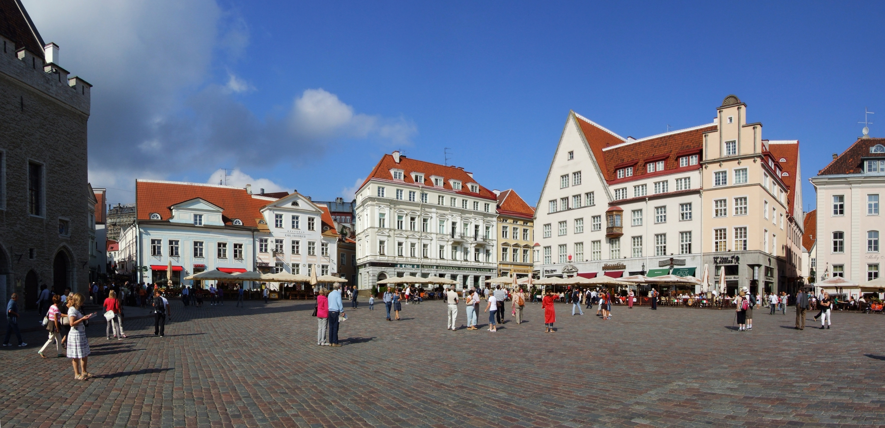

Tallinn
Estland Mittelalter purDie wohl besterhaltene mittelalterliche Altstadt Nordeuropas — Stadtmauern, Türme und enge Gassen, dazu eine überraschend hippe Kreativszene.
- Altstadt & StadtmauerWehrtürme, das Rathaus und Raekoja plats (Rathausplatz).
- Domberg (Toompea)Oberstadt mit Parlament und Burg.
- Alexander-Newski-KathedraleRussisch-orthodoxe Zwiebeltürme gegenüber dem Schloss.
- Kohtuotsa-AussichtDer Postkarten-Blick über die roten Dächer.
- Telliskivi Creative CityAltes Fabrikgelände voller Cafés, Street-Art, Markt.